| Column | Type | Source | Description | Missing |
|---|---|---|---|---|
fuel |
VARCHAR | pipeline | Fuel type: DVSA; DVLA (same vehicle only, mapped to DVSA terms) where DVSA is ‘Other’, or says Electric/Fuel Cells for a DVLA vehicle with an engine; fuel of same-engine vehicles for an Electric/Fuel Cells vehicle with a recorded engine size; Electric where the make/model check corrects it. Never backfilled | 0% |
fuel_src |
VARCHAR | pipeline | Source of fuel: dvsa, dvla, variant (most common fuel of the same make/model/birth year/engine size), model (set to Electric by the make/model check) or dft (replaced by the DfT plug-in hybrid value) | 0% |
fuel_check |
VARCHAR | pipeline | Fuel compared with the same make/model: ok, rare_conversion, rare_for_model, implausible_for_model, corrected_electric, unknown_fuel or no_reference (see methodology.md) | 0% |
fuel_simple |
VARCHAR | pipeline | Fuel grouped as Petrol / Diesel / Electric / Hybrid Electric / Plug-in Hybrid Electric / Other | 0% |
fuel_DFT |
VARCHAR | DfT VEH0220 | Fuel as the DfT vehicle licensing statistics record it for this make and model (VEH0220), which unlike DVSA and DVLA separates plug-in hybrids from other hybrids. NA where the make/model has no DfT vehicles of this fuel group, or where no one DfT fuel is common enough to choose (see fuel_DFT_src) | 5.54% |
fuel_DFT_src |
VARCHAR | pipeline | How fuel_DFT was found: dft_model (the DfT model string’s most common fuel of this group), dft_genmodel (the generic model’s), ambiguous_model / ambiguous_genmodel (a match, but no single DfT fuel reaches the checks.dft_fuel_share threshold) or no_reference | 0.14% |
fuel_DVSA |
VARCHAR | Bristol (DVSA) | As supplied by DVSA | 0% |
fuelType_DVLA |
VARCHAR | Bristol (VES) | As returned by the DVLA Vehicle Enquiry Service | 23.05% |
engine_cc |
INTEGER | pipeline | Engine size (cc): DVSA if > 0, else DVLA if > 0 (same vehicle only); 0 for Electric and Fuel Cells; else most common for the same make/model/birth year/fuel, then make/model/fuel | 0.85% |
engine_cc_src |
VARCHAR | pipeline | Source of engine_cc: dvsa, dvla, no_engine (Electric / Fuel Cells), model_year_fuel or model_fuel | 0.85% |
engine_check |
VARCHAR | pipeline | Engine size check: ok; engine_removed (Electric / Fuel Cells vehicle with a recorded engine size, set to 0); zero_replaced (fuel with an engine recorded as 0cc, backfilled); missing (fuel with an engine and no engine size after backfill) | 0% |
engineSize_DVSA |
INTEGER | Bristol (DVSA) | As supplied by DVSA | 17.11% |
engineCapacity_DVLA |
INTEGER | Bristol (VES) | As returned by the DVLA Vehicle Enquiry Service | 24.05% |
23 Fuel and engine
23.1 Overview
DVSA and DVLA each record a vehicle’s fuel and engine size, with different labels and different gaps, and neither separates plug-in hybrids from other hybrids. The pipeline checks the two against each other and against similar vehicles, and builds one harmonised value of each. Chapter 4 explains the fuel types and why they matter.
fuelis the harmonised fuel, in DVSA’s terms. It is the DVSA value, replaced by the DVLA value where DVSA saysOtheror the two clearly disagree, and checked against the fuel of other vehicles of the same make and model (methodology, section 5.2 and section 5.3).fuel_srcsays where it came from andfuel_checkhow it compares with the make and model.fuel_DFTis the fuel DfT’s licensing statistics record for the vehicle’s model, which unlike DVSA and DVLA separates plug-in hybrids. It is how plug-in hybrids are identified (section 5.5).fuel_simplegroups the harmonised fuel into six categories: Petrol, Diesel, Electric, Hybrid Electric, Plug-in Hybrid Electric and Other (section 6.1). It is the column most analyses need.engine_ccis the engine size in cc: DVSA, else DVLA, else the most common for similar vehicles, and 0 for electric and fuel cell vehicles (section 5.4).engine_cc_srcandengine_checkrecord where it came from and what was corrected.fuel_DVSA,fuelType_DVLA,engineSize_DVSAandengineCapacity_DVLAare the values as supplied.
ImportantPlug-in hybrids are a lower bound
A vehicle is a plug-in hybrid in fuel_simple only when its DfT model is clearly one. Models sold as both plug-in and ordinary hybrids stay as ordinary hybrids, so plug-in hybrids are undercounted (Chapter 14).
23.2 Coverage
The harmonised fuel is never blank: fuel_DVSA is supplied for every vehicle, and 98.5% of harmonised values are the DVSA value unchanged. A fuel of Other or a fuel_check of unknown_fuel or no_reference means the fuel is not really known, or could not be checked.
fuel_DFT is present for 94% of vehicles, those whose model is found in the DfT statistics with a fuel of the same group. It is lower for the oldest vehicles (90% of those first used before 2000), as for the model match itself (Chapter 20).
The engine size shows most clearly why the harmonised columns are worth using (Figure 23.1). The DVSA engine size comes from the MOT history, so it is missing for vehicles that have not yet been tested: only 1% of vehicles first used in 2024 have one. The DVLA engine capacity fills most of these, but is itself missing for older vehicles with no VES record. Combining them, and filling the rest from similar vehicles, gives engine_cc for 99.1% of vehicles, at every age.
| Column | All vehicles | Before 2000 | 2000–09 | 2010–19 | 2020 on |
|---|---|---|---|---|---|
fuel |
100.0% | 100.0% | 100.0% | 100.0% | 100.0% |
fuel_src |
100.0% | 100.0% | 100.0% | 100.0% | 100.0% |
fuel_check |
100.0% | 100.0% | 100.0% | 100.0% | 100.0% |
fuel_simple |
100.0% | 100.0% | 100.0% | 100.0% | 100.0% |
fuel_DFT |
94.5% | 90.1% | 95.7% | 95.6% | 95.3% |
fuel_DFT_src |
99.9% | 100.0% | 99.7% | 99.9% | 99.9% |
fuel_DVSA |
100.0% | 100.0% | 100.0% | 100.0% | 100.0% |
fuelType_DVLA |
76.9% | 61.9% | 64.8% | 96.3% | 81.9% |
engine_cc |
99.1% | 97.9% | 99.4% | 99.6% | 99.3% |
engine_cc_src |
99.1% | 97.9% | 99.4% | 99.6% | 99.3% |
engine_check |
100.0% | 100.0% | 100.0% | 100.0% | 100.0% |
engineSize_DVSA |
82.9% | 84.2% | 94.9% | 93.6% | 39.7% |
engineCapacity_DVLA |
76.0% | 59.6% | 64.1% | 95.6% | 81.3% |
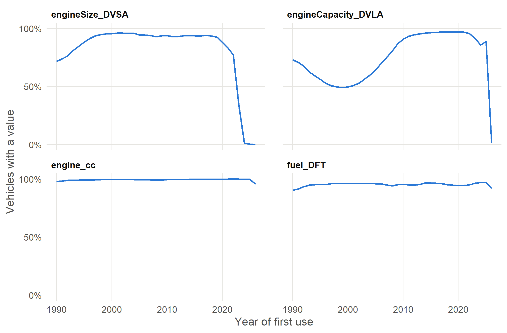
23.3 Values
How the values of each column change over time, by year of first use, from 1990. Numeric columns and dates show the minimum, lower quartile (Q1), median, upper quartile (Q3) and maximum; other columns show the share of vehicles with each value, with the less common values grouped as All other values and missing values as Blank.
fuel
Fuel type: DVSA; DVLA (same vehicle only, mapped to DVSA terms) where DVSA is ‘Other’, or says Electric/Fuel Cells for a DVLA vehicle with an engine; fuel of same-engine vehicles for an Electric/Fuel Cells vehicle with a recorded engine size; Electric where the make/model check corrects it. Never backfilled.
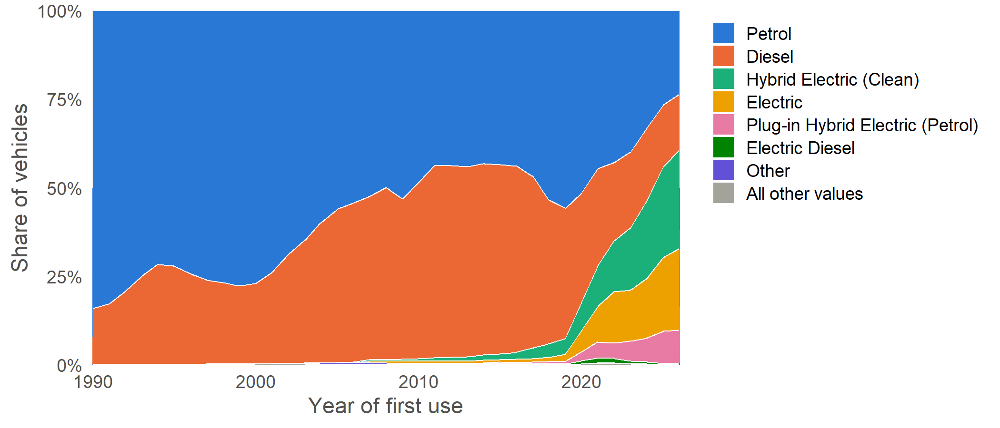
fuel_src
Source of fuel: dvsa, dvla, variant (most common fuel of the same make/model/birth year/engine size), model (set to Electric by the make/model check) or dft (replaced by the DfT plug-in hybrid value).
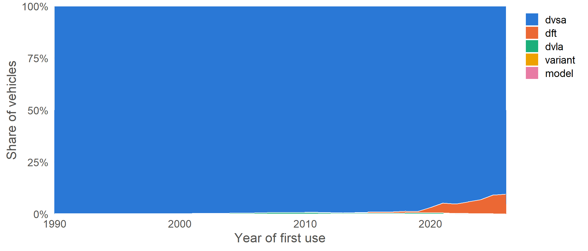
fuel_check
Fuel compared with the same make/model: ok, rare_conversion, rare_for_model, implausible_for_model, corrected_electric, unknown_fuel or no_reference (see methodology.md).
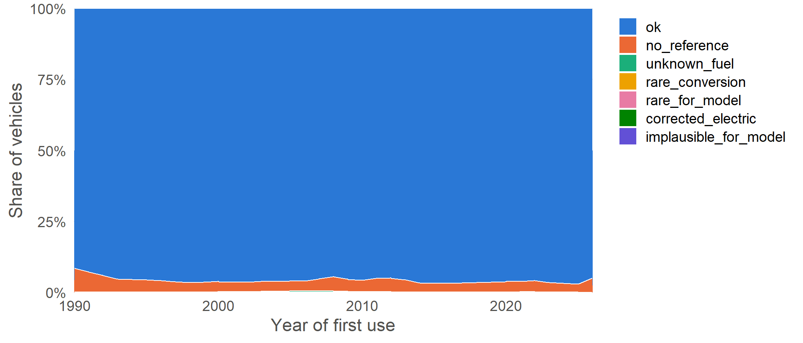
fuel_simple
Fuel grouped as Petrol / Diesel / Electric / Hybrid Electric / Plug-in Hybrid Electric / Other.
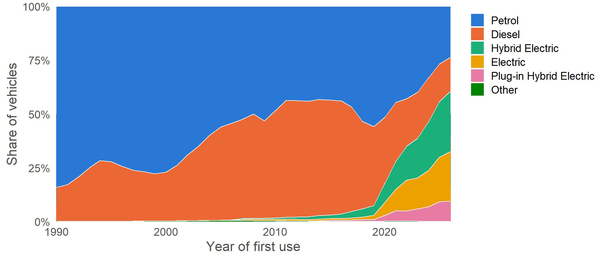
fuel_DFT
Fuel as the DfT vehicle licensing statistics record it for this make and model (VEH0220), which unlike DVSA and DVLA separates plug-in hybrids from other hybrids. NA where the make/model has no DfT vehicles of this fuel group, or where no one DfT fuel is common enough to choose (see fuel_DFT_src).
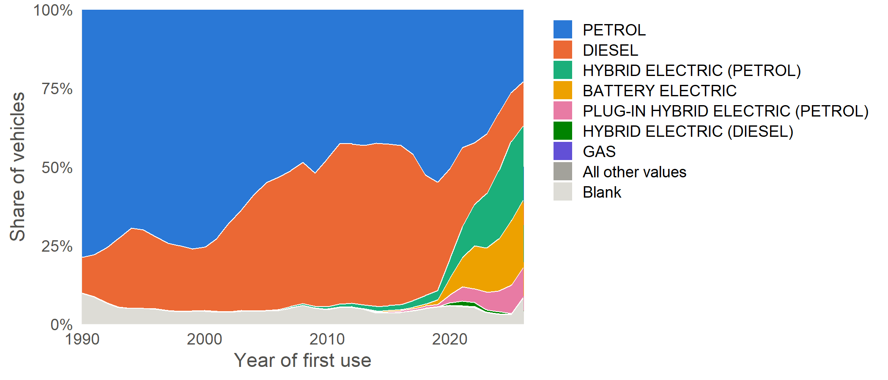
fuel_DFT_src
How fuel_DFT was found: dft_model (the DfT model string’s most common fuel of this group), dft_genmodel (the generic model’s), ambiguous_model / ambiguous_genmodel (a match, but no single DfT fuel reaches the checks.dft_fuel_share threshold) or no_reference.
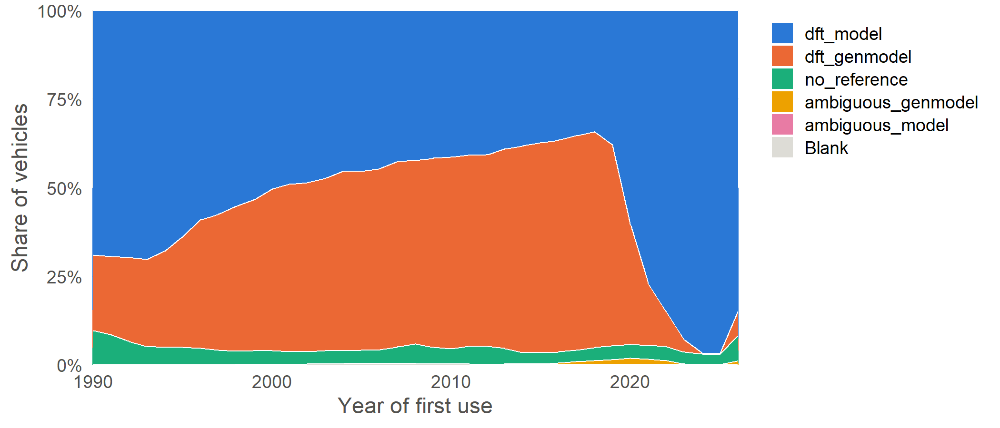
fuel_DVSA
As supplied by DVSA.
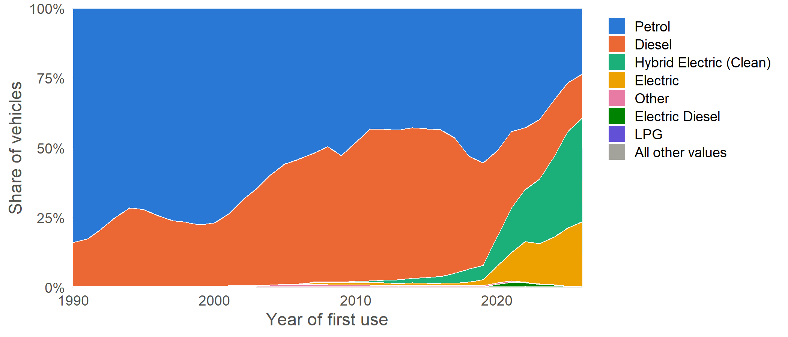
fuelType_DVLA
As returned by the DVLA Vehicle Enquiry Service.
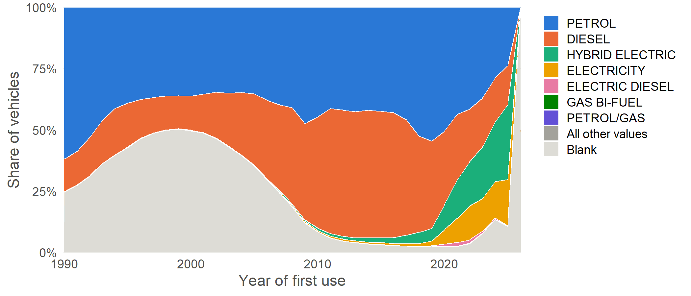
engine_cc
Engine size (cc): DVSA if > 0, else DVLA if > 0 (same vehicle only); 0 for Electric and Fuel Cells; else most common for the same make/model/birth year/fuel, then make/model/fuel.
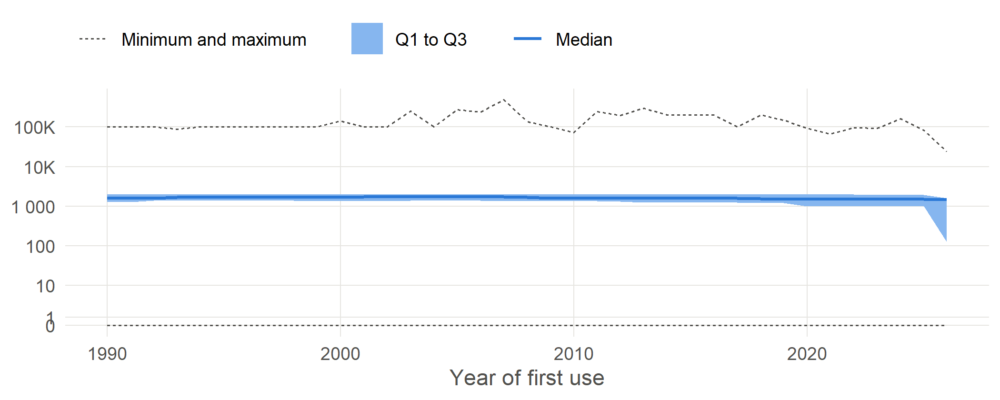
engine_cc_src
Source of engine_cc: dvsa, dvla, no_engine (Electric / Fuel Cells), model_year_fuel or model_fuel.
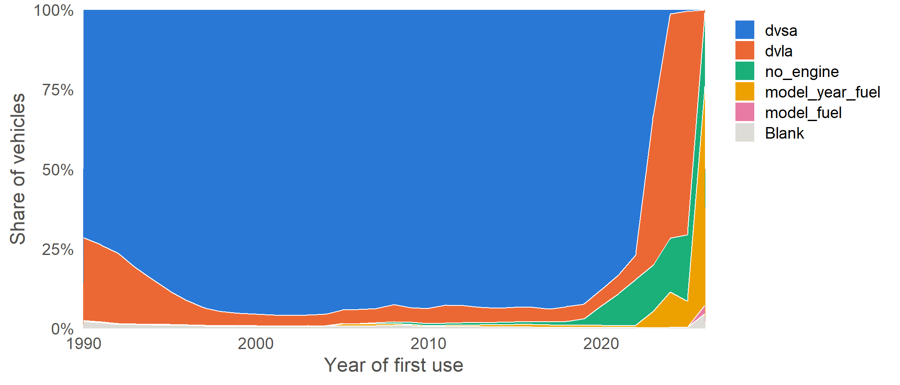
engine_check
Engine size check: ok; engine_removed (Electric / Fuel Cells vehicle with a recorded engine size, set to 0); zero_replaced (fuel with an engine recorded as 0cc, backfilled); missing (fuel with an engine and no engine size after backfill).
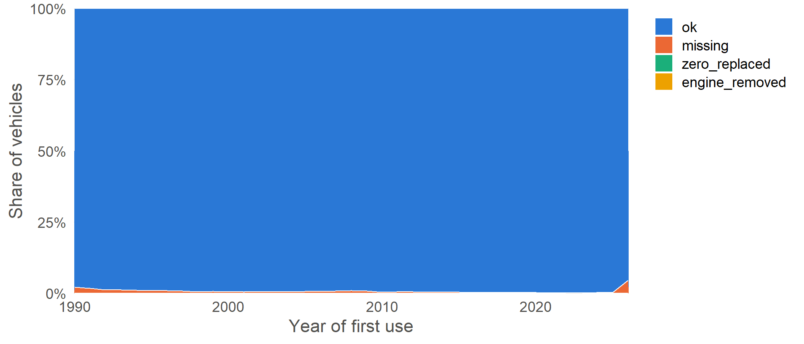
engineSize_DVSA
As supplied by DVSA.
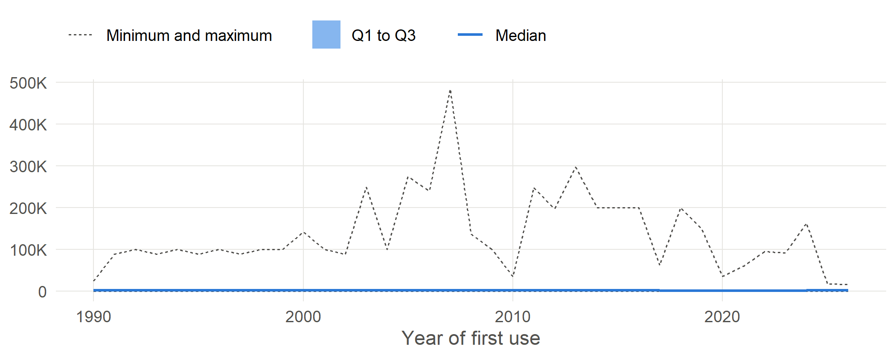
engineCapacity_DVLA
As returned by the DVLA Vehicle Enquiry Service.
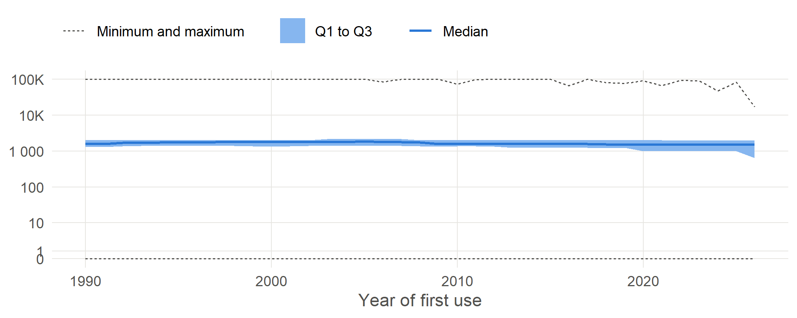